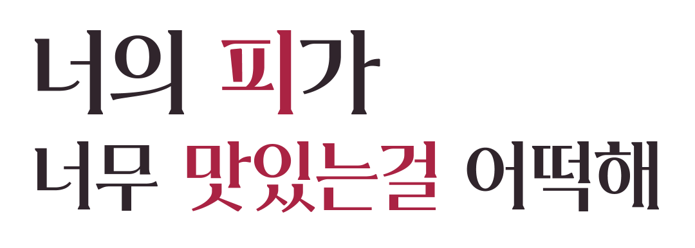

비밀은 소중하게, 허기도는 세심하게
프람벨의 허기도를 챙겨 주세요. 평범한 식사도 하지만 가끔은 피가 필요해요. 저택을 유지하는 데도 피가 쓰인답니다. 흡혈은 서로의 의사를 확인하고, 무리하지 않기로!

평범한 시골로 이사 왔을 뿐인데,
동거인이 흡혈귀라고요?
비밀 하나, 오지랖 한 스푼, 그리고 두근거림.
당신이 주인공이 되는 솔안리의 느긋한 러브코미디.
이 이야기의 주인공은, 당신.
어릴 적 잠시 놀러 왔던 산골 마을, 솔안리.
“다음에 또 놀러 올게.” 그날의 약속을 뒤로하고,
당신은 이곳의 새로운 주민이 되었습니다.
그리고 만나게 된 건, 조용한 시골살이를 꿈꾸며 이사 온 흡혈귀 프람벨. 그런데 평화로운 은둔 생활을 하기에 이 마을 사람들… 조금 지나치게 다정합니다.
어째서인지 그녀에게 유독 달콤하게 느껴지는 당신의 피.
얼떨결에 시작된 동거와 꼭 지켜야 할 비밀 하나.
장을 보고, 이웃을 만나고, 함께 하루를 보내다 보면—
평범한 일상도, 꽤 두근거릴지 몰라요.
낯설지만, 곧 익숙해질 얼굴들
카드를 눌러 조금 더 가까워져 보세요.
여섯 이웃과 당신, 관계는 지금부터.
정해진 정답 없이, 당신의 속도로
프람벨의 허기도를 챙겨 주세요. 평범한 식사도 하지만 가끔은 피가 필요해요. 저택을 유지하는 데도 피가 쓰인답니다. 흡혈은 서로의 의사를 확인하고, 무리하지 않기로!
문 앞의 채소 한 봉지, 슈퍼에서의 수다, 분교의 작은 행사. 이웃의 다정함을 만나며 당신만의 관계를 만들어 보세요.
연주와 다시 가까워질까요? 동거인과 저녁을 먹을까요? 정해진 공략 순서는 없어요. 마음이 가는 사람과 장소에서 이야기를 이어 가세요.
산과 강 사이, 작은 우리 동네
조금 불편해도, 그래서 더 가까운 곳.
약 150명의 주민이 함께 살아가요.
폐가가 하룻밤 사이 아늑한 저택으로. 2층 큰 방에는 프람벨, 1층 작은 방 하나에는 소현이 살아요.
연주와 재희의 부모님이 운영하는 마을 유일의 슈퍼. 마을 소식도, 필요한 물건도 이곳에 모여요.
열 명 남짓한 아이들과 교장 선생님, 소현이 함께하는 작은 학교. 마을 행사가 열리는 만남의 장소예요.
도진과 유나, 두 명의 간호사가 주민들을 돌봐요. 늘 바쁘지만 세심한 진료만큼은 놓치지 않아요.
분교 앞에서 떡을 찧고 떡국을 나눠요. 여성 등장인물들은 한복을 입어요.
연주는 간식, 유나와 도진은 응급처치 담당. 주민 모두 함께해요.
분교 음식 부스부터 밤의 불꽃놀이까지. 관광객과 함께 슈퍼도 북적여요.
진료소가 준비하고 분교에서 만나는 건강 교육. 이날은 모두 모여요.
거창한 모험이 아니어도 괜찮아.